Product Design
Checkout Flow
Improving the user experience when purchasing a Nanodegree Program.
My Role
- UX Designer
Timeline
- Aug. 2018
Team
- Engineer, Product Manager
Responsibilities
- User Research, Interaction Design, UX/UI

Background
Udacity's mission is to democratize education through the offering of world-class higher education opportunities that are accessible, flexible, and economical. The main products are the online Nanodegree programs (ND), a project and skills-based educational credential program.
User Needs and Problems
Problem: when students hit the “Enroll Now” button from the course overview page, they are taken directly to the checkout page giving them the feeling of being "rushed" to purchase. In addition, users are unsure if the product is worth the high price point.
Solution: improve the checkout experience by creating a cart so students don’t feel “rushed” and are able to purchase multiple items at a time. Add a section to include the services that students receive when purchasing a course to increase the value of the product.
Pain Points
The current flow does not allow the user to purchase more than one item at a time. The reasoning for this decision was made because the team assumed that people don't purchase multiple Udacity products at a time since ND's are priced between $500-$1000. However, that is a dangerous assumption to make as that can lead to a loss of purchases. It is important to acknowledge and design for these edge cases in order to have a complete positive customer experience.
Users are taken directly to checkout when they hit the "Enroll Now" button from a course overview page. This gives the students a feeling of being "rushed" to purchase. Having a cart can be the buffer to allow students time to think about their decision.
Udacity's main advantage is that we offer services such as resume review, one-on-one mentorship, project reviews, and much more. All of these services are included in the pricing of a ND. Currently, when users checkout, they don't explicitly see that they are getting those items which may be useful when trying to convert a lead.
Current Checkout Analysis
The current mobile checkout is just one long scroll. There is no indication of how many “steps” the process is. Breaking it up into multiple steps may help ease anxiety of a long form. The current design is optimized to get the user to the checkout stage as quickly as possible. The user is taken directly to checkout when they hit the “Enroll Now” button on an Nanodegree overview page (NDOP).
The current experience does do a good job in eliminating distractions by having no ads, images, etc. It is also very simple with only two steps — sign in/up and payment.
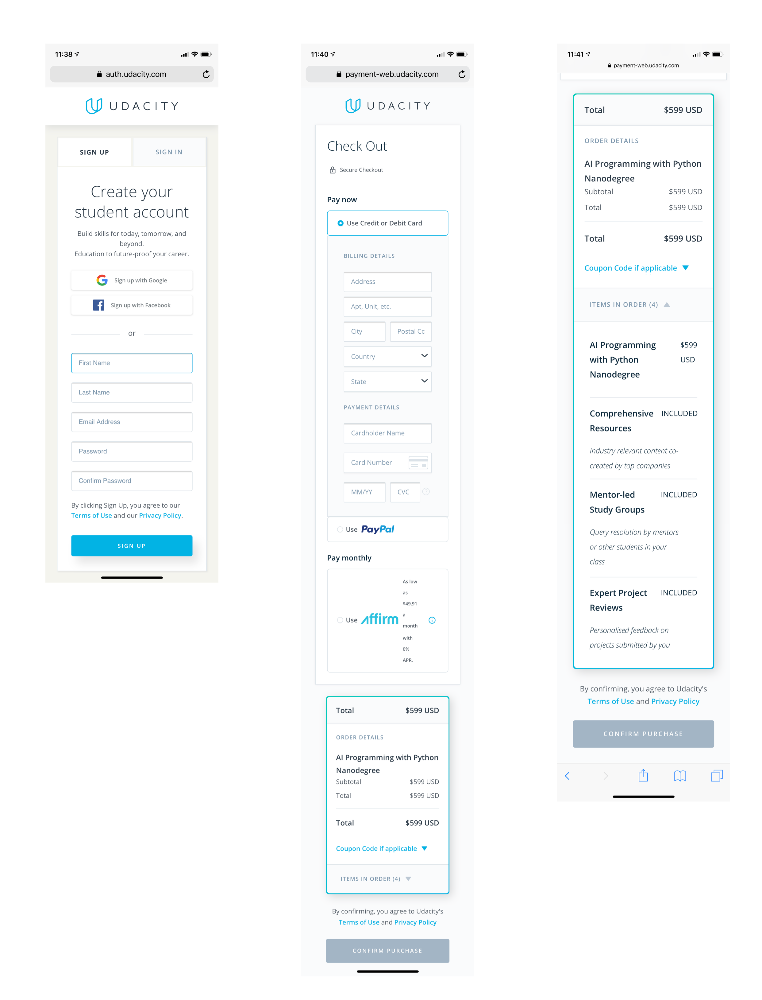User Flows
One of the main differences in my proposed flow is the addition of a cart. This enables a user to purchase multiple items at once which not only saves time but can reduce the frustration of typing in the same information multiple times.

Wireframes
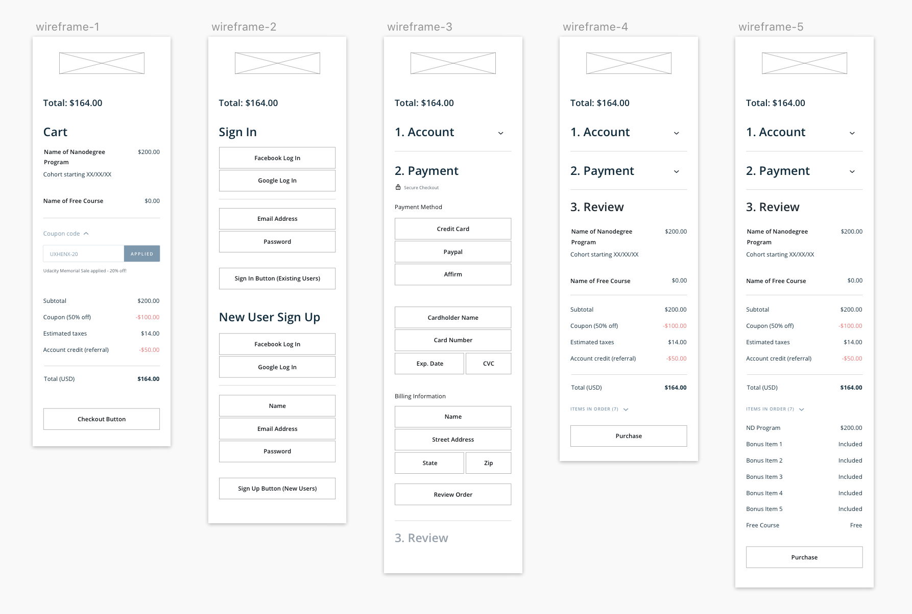 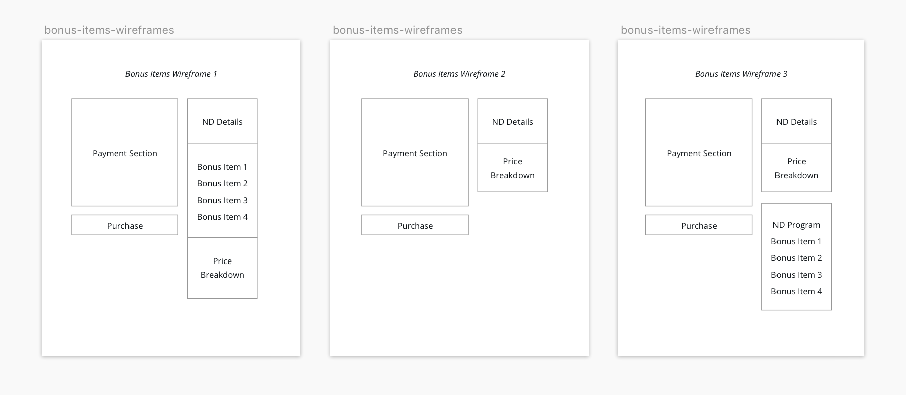
Bonus Items Explorations
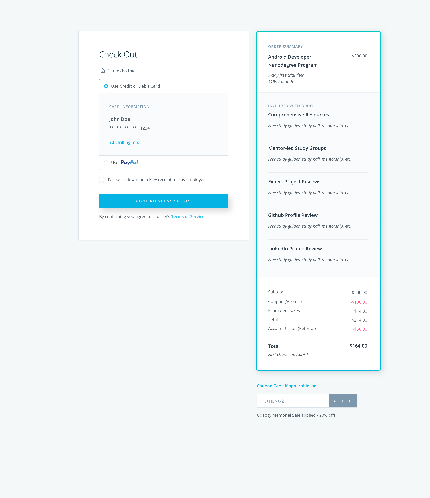 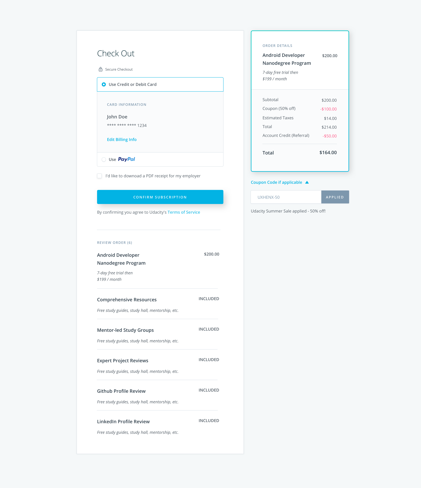 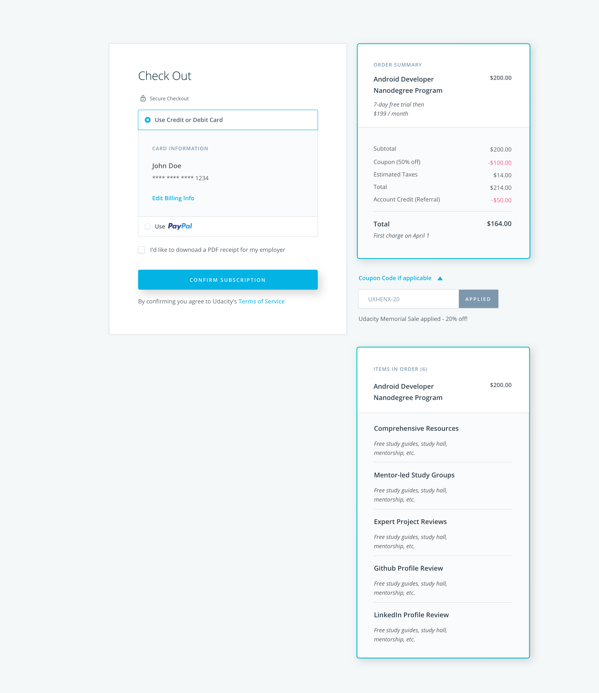 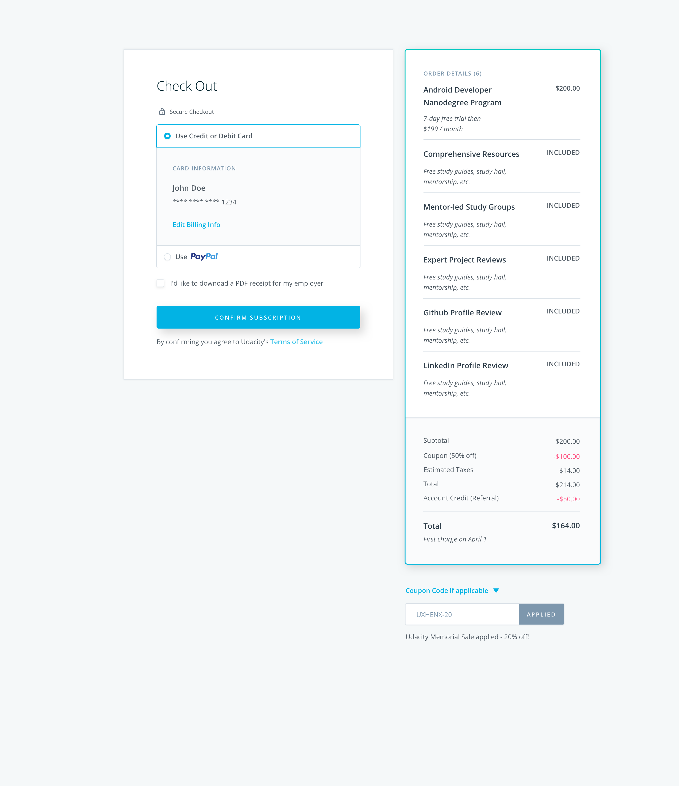I experimented with multiple layouts for the “bonus" items section. I first tried listing them right underneath the ND details but that made the Order Summary section too long.
I then tried putting them under the payment section, but realized that the logic/flow didn’t really make sense. The confirmation button would have been above it and I also thought it should be grouped with the Order Summary section since the items are related.
I went back to putting the items in a separate section under the Order Summary card, but the third layout seemed disconnected. If the user had a small browser, there was a possible chance of this section getting cut off. There would be no indication that the sections were connected or that the user should scroll.
I tried connecting the ND details and "bonus" items again but didn’t make a color block separation like my first idea. I explored more options and came up with my final option (below) which is implemented on the checkout site right now. On desktop, the bonus items are in the expanded view by default. However, on mobile, I created the default view as collapsed since the screen is smaller and didn't want to cause the user unnecessary scrolling if they didn't want to.
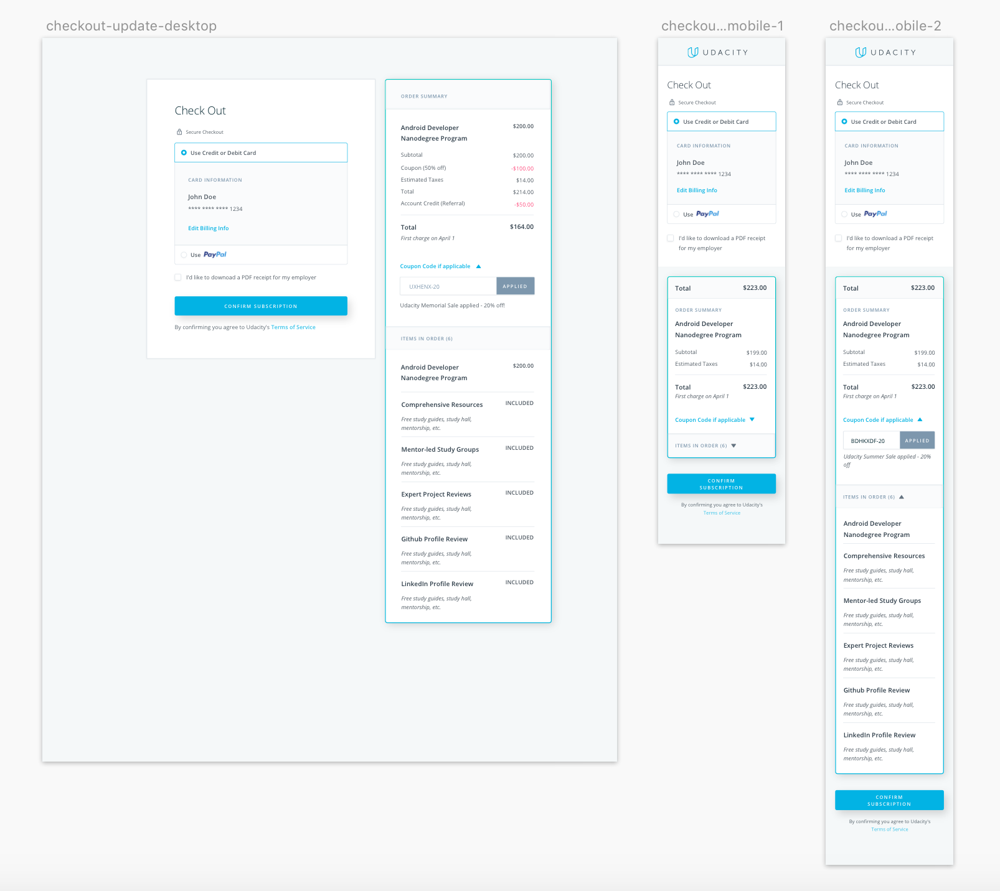Payment Method Exploration
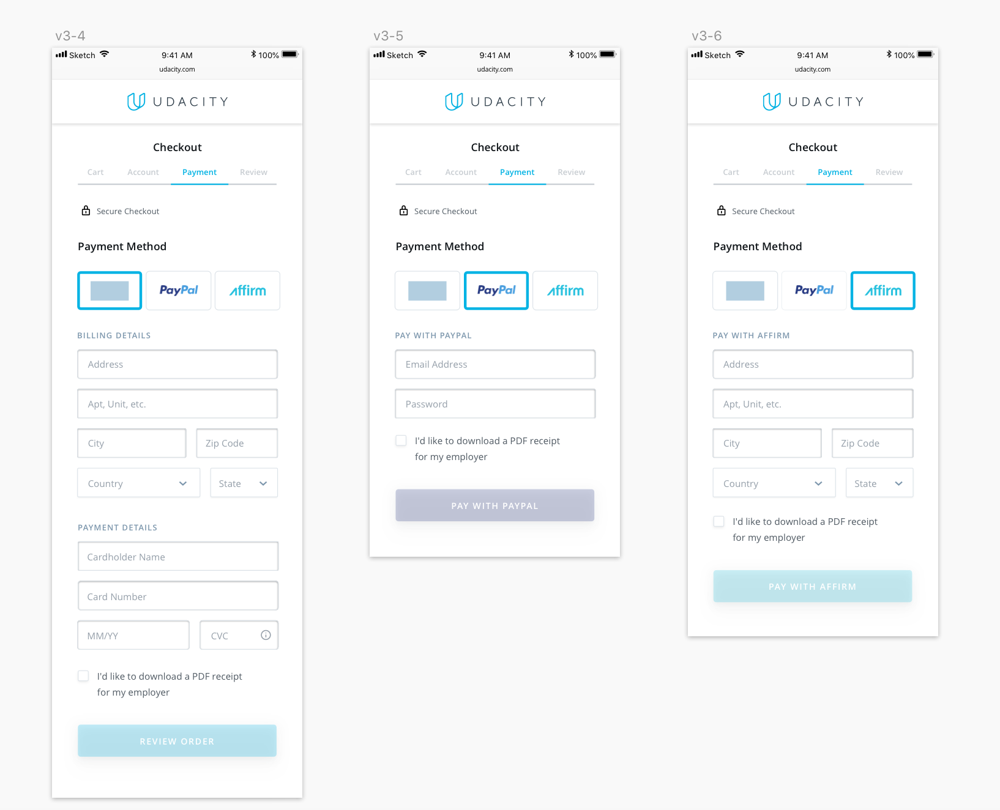For this iteration, I explored a new payment selection design. Instead of having a traditional radio button selection, I created three buttons of the payment method themselves. When a button is selected, the corresponding payment forms will appear.
After receiving feedback, I decided that using the traditional radio button method is better. This is because when users are giving personal information, they want to feel a sense of security. Seeing a familiar layout and design provides security and therefore, people will trust it. In addition, the radio buttons provide a clearer indication that they are buttons to be selected. The new explorations interaction is not as obvious.
Account Sign In/Up Explorations
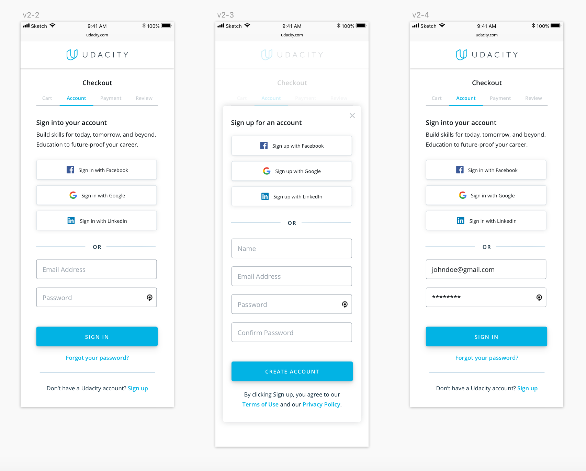I iterated on the sign in and sign up screens to see if I could create a more continuous flow. I explored the use of a pop up log in module. However, this was distracting and took the user out of the main flow because they had to click the exit button to get out of the module. I decided to stick with the traditional method of loading a new page for either signing in or creating an account.
Progress Indicator Explorations
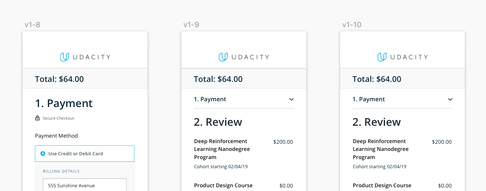 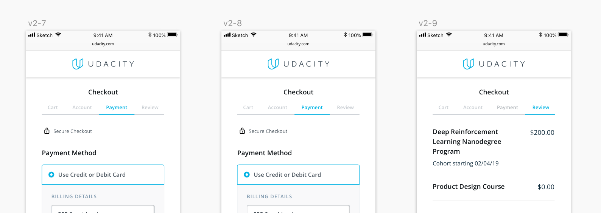 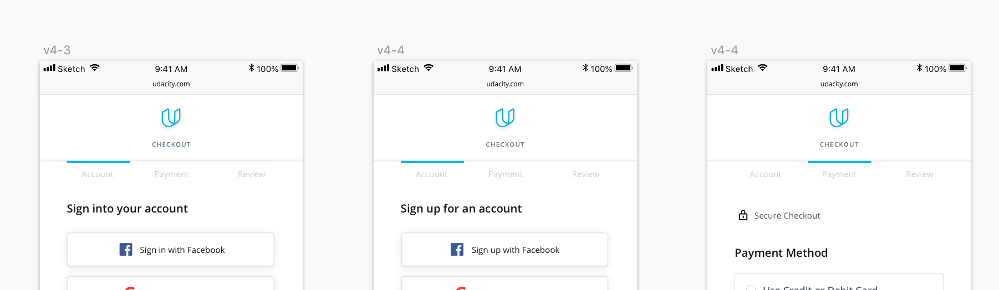I explored the use of an "accordion" style and two types of progress bars to help guide the customer through the checkout process. This is lacking in the current design as the flow is just one long scroll.
My final iterations had the process as only two steps which showed that the "accordion" style was a bit excessive. The progress bar was much more visually friendly, took up less space, and was simple to understand.
Final Prototype
My final iteration for the "bonus" items design includes a dropdown option that can be expanded if the users want to see which items were included in their ND purchase. The addition of this section is important because those services are the ones that distinguish Udacity from their competitors. Showing them in the checkout is a good reminder to the user of why they are choosing Udacity.
The cart is not implemented at the moment due to engineering and time constraints but the team is looking to revisit the proposal down the future roadmap. My proposed cart checkout flow, uses a minimal progress bar indicator of two steps. This way users can feel at ease knowing the process will be quick and simple. In the cart, it gives them the option to remove items or to add a coupon code. However, during the "Review Order" page, I do not include those options since the user is at the end of the process and I don't want them to change their mind or leave the page to find a coupon code.
Reflection
Having a cart slows down the checkout time for a single item by 3 seconds. This is a small difference which shouldn't affect the users experience. However, when purchasing multiple items, it speeds up the process by 26 seconds. The slowdown for single item purchases may be worth it if testing is conducted on the site and shows that people do want to buy multiple items.
Next Steps
I would like to conduct user testing on the site with and without a cart to see whether or not people purchase more than one product at a time.
If the data shows people want to buy multiple items, then having a cart can drastically improve the checkout speed. If the results show that people only buy one product at a time, then we can be certain that we are already maximizing our flow.
I believe that testing is very important in order to inform the next steps on how to optimize the checkout process.